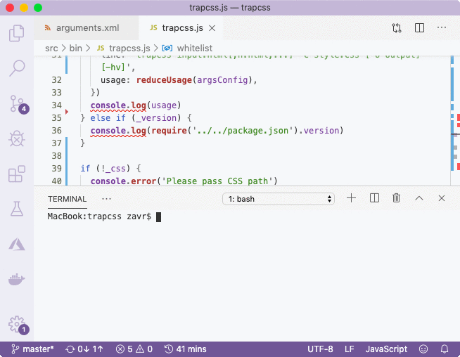

###! Implementation
The template has already come with some binary source code, for example for printing version number and usage information. The usage string is constructed with the `usually` package, that accepts a description, example, line and usage itself. The usage is made using the ``reduceUsage`` method from `argufy`, based on the arguments config that was also exported from the *get-args.js* file. It will create a 2-column table with full and short arguments' names and their descriptions.
We can see what the usage looks like by calling the *dev* script: -h:
```bash
Remove unused CSS
trapcss input.html[,n.html,...] -c style.css [-o output] [-hv]
input The HTML files to read.
--css, -c The CSS file to drop selectors from.
--output, -o The destination where to save output.
If not passed, prints to stdout.
--help, -h Print the help information and exit.
--version, -v Show the version's number and exit.
Example:
trapcss index.html example.html -c style.css -o style-dropped.css
```
This presentation might be different from how you want it to look like, so feel free to implement your own usage function from the args config, or submit a [PR](https://github.com/artdecocode/usually) to the `usually` package with new options for styling.
Moreover, we required *package.json* at runtime, which means that it won't be built into the compiled code, and will remain as `require` call. Requires from the entry file don't make it to the dependency list during static analysis, but if we wanted to make dynamic import anywhere else, it'd have to be broken up:
```js
const pckg = require(/* dpck */ 'dynamic-import')
```
_version_ is a recognised option by the compiler, so we don't have to use quoted props, for other fields, we'd have to refer to them like `require('../../package')['main']` to avoid renaming.
Next, we check if the CSS was supplied via the arguments. If it wasn't we print an error message and exit with status code 1, which means that the program wasn't executed successfully and is a unix convention. Otherwise, we'll read the CSS file, using standard *readFileSync*. Typically, in Node, we're trained to use promises for non-blocking IO, however because we're not running a server, and simply executing a script, it's absolutely appropriate to use sync operations in this case (unless we're reading/writing many files in parallel). We used casting, because if the second argument (encoding) is not passed to ``readFileSync``, it will return a buffer, but the compiler does not support overloading, so we have to explicitly cast the return type. This is done by wrapping the value in brackets:
```js
/** @type {string} */ (readFileSync(input, 'utf8'))
```
_DropCSS_ provides a strategy for reading multiple input files. We create a `whitelist` set, and then for each HTML file, execute the ``trapcss`` method against it and CSS, and add selectors to the set. In the end, we simply pass an empty string as HTML, but use `shouldDrop: sel => !whitelist.has(sel)` property of the config that will utilise the accumulated whitelist.
Finally, if the `-o` argument was passed, we can save the result to a file. If not, we print the output to stdout to the user. We used the ``c`` method from `erte` to print the output location in yellow. It also contains the ``b`` method to color the background of strings, and the two can be combined. The template came with `indicatrix` package also that would print a loading indicator (triple ellipse) however we didn't have any async operations so it could be removed.
